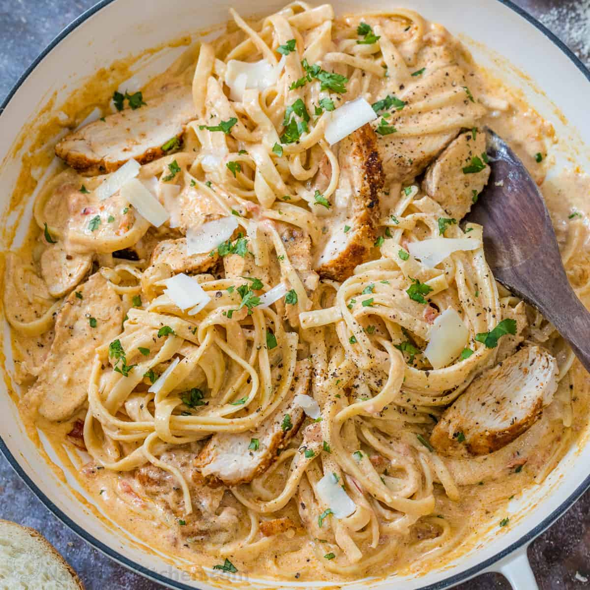

Cajun Chicken Pasta

Description
This dish is a personal favorite as it is easy to make, tastes great, and can be used as a weekly meal prep.
Ingredients
- Two cloves of garlic
- Cottage cheese
- Cajun seasoning of your choice (chef prefers "Slap your momma's"
- Grated parmesean
- Fat-free milk
- Pasta of your choice (chef prefers a whole grain noodle)
- Chicken Breast
- Small bundle of parsley
Steps
- Preheat airfryer to 400
- Season chicken breasts with cajun seasoning and place in airfryer for 20 mins
- Place garlic cloves, cup and a half of cottage cheese, cup of milk, half cup of parmesean, two tbs of cajun seasoning into a blender and blend.
- Fill a pot with water and bring to a boil, place noodles inside for 8 mins, or until desired doneness.
- Strain noodles and play back into the pot along with sliced chicken, and homemade sauce.
- Garnish with parsley
- Enjoy!
Home